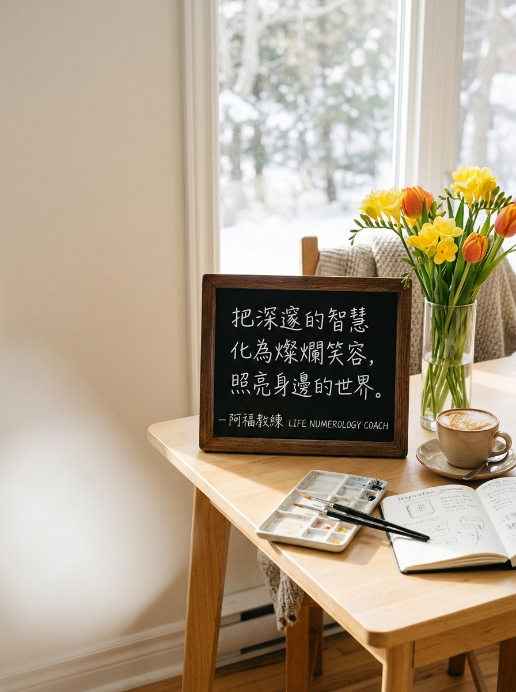

NOVEMBER 27 · DEEP WISDOM & RADIANT JOY
11/27 壽星
生日快樂
「把深邃的智慧化為燦爛笑容，你就是照亮世界的陽光。」
生日數 27（內7 外2 合9：深邃慈悲・洞察大愛）
2026 流年 3（創意・表達・熱忱・歡笑）
生日數能量：深邃慈悲・洞察大愛・智慧・共感
流年 3 主題：創意・表達・熱忱・歡笑
A YEAR OF PLAYFUL WISDOM & INSPIRING EXPRESSION
走出深沉的思考殿堂，用最生動快樂的創意點亮人心
迎向 2026 流年 3 的創意綻放之年，宇宙想為心思深邃的 27/9 號人打開一扇陽光天窗：身為內具透徹哲思（7）、外顯溫柔傾聽（2）、合為大愛心靈導師（9）的壽星，你總能洞悉人性、體貼眾生，但有時也因為想得太深而顯得安靜內斂。今年正是你「化深奧為生動、用歡笑傳遞智慧」的大好時機！拿起畫筆、麥克風或鍵盤，把你的洞見變成有趣的故事與作品。當智者開始燦爛微笑，全世界都會被你療癒。
年度提問｜「如果把心中深奧的智慧，變成一個有趣的故事或一首快樂的歌，我今天想和誰分享？」
YOUR ENERGY DJ · 27/9 號人的流年 3 陽光點播站
當深邃慈悲的 27/9 智者，走進歡欣綻放的流年 3
身為看透世事卻依然溫柔的 27/9 號壽星，走進「流年 3」的快樂頻率，宇宙要請你盡情展現活潑有趣的一面！今天 DJ 特別為你調配流年 3 創意表達歌單——釋放你的靈感與幽默，讓你的聲音與笑容成為最美的陽光！
LIFE NUMBER 3 · CLASSROOM PLAYLIST
3 號人課堂激勵與歡唱歌單（給 9 號人的流年 3 能量歌單）
這份歌單來自阿福教練生命靈數課堂中，專為流年 3 主題（創意・表達・熱忱・歡笑）所調配的經典曲目。點擊任一曲目即可開啟 YouTube 搜尋聆聽，陪伴你在新的一歲調頻對齊、綻放光芒！
- 01隱形的翅膀張韶涵｜主題開場・給表達勇氣，讓理念化為動人聲音（YouTube 搜尋）
- 02狂熱蘇打綠｜釋放熱忱・點燃創意迸發，甩開條條框框（YouTube 搜尋）
- 03小情歌蘇打綠｜真誠相伴・溫柔傾訴，用純粹感動人心（YouTube 搜尋）
- 04傷心的人別聽慢歌五月天｜活力互動・用歡樂驅散陰霾，點燃全場士氣（YouTube 搜尋）
- 05快樂崇拜潘瑋柏｜節奏律動・大方展現幽默與社交魅力（YouTube 搜尋）
- 06稻香周杰倫｜回歸初心・用簡單純粹的旋律分享快樂（YouTube 搜尋）
- 07100種生活盧廣仲｜創意想像・打破既定標準，探索多元可能（YouTube 搜尋）
- 08明天會更好群星｜希望傳遞・用動人聲音點亮身邊人的心靈（YouTube 搜尋）
歌單依《生命靈數3號人_激勵九首與歡唱點播歌單》整理。點播連結均為 YouTube 官方影音搜尋結果；播放時請依授課場地與著作權規範使用。
願你的智慧輕盈飛揚，臉上永遠掛著赤子般的燦爛笑容，所到之處皆是溫暖春光。
👉 11/27 壽星快來留言【🌷】！為新的一歲許下最棒的心願！
#11月27日生日快樂 #生命靈數 #生日數27 #生日數9 #流年3 #深邃慈悲 #燦爛笑容 #阿福教練